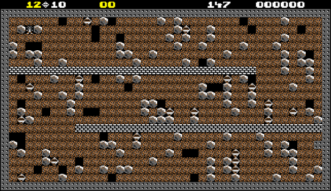

4 Best Browser Games You Can Play at Home
There was a time when you sat down on a chair, turned on the CPU of your ordinary desktop computer, and then said, "Let's surf the Internet today!". But at the time, you didn't spend time talking to your friend on Facebook, nor did you watch movies on Netflix. All in all, you wanted to play the games on the web! Regardless of whether you were idle at home or at your desk, browser games were the best way to kill time. Unlike the other games, browser games had no need to install hardware or do anything with it.
Everything you need for the browser game is readily available - an internet connection and a web browser. So if you sometimes feel like reliving your childhood, you can spend some time playing the best browser games on your computer / laptop. Let's discuss some of the best browser games.
Linerider
In a physics-based game, you need to create a path that the character sitting on the sled will move. Gravity and laws of motion? Well, you don't need to know much about all of this, but remember what goes up, goes down! Seriously, make sure you draw a realistic path, otherwise the character will get off track very quickly.
After drawing the path, you can even test it before starting the character for the last run. Because once it's in operation, you can't change the path in between. Other than that, there are tons of other customizations. Check them out too. All in all a short, fast and interesting time killer game.
A Dark Room
This game is on a different track when compared to the other browser games on the list. Instead of the graphics, it is based on the text-and-menu adventure in which you are supposed to build and maintain a successful community in the most difficult conditions. The supply management, as well as logistics, remains of utmost importance like surviving an animal attack. You can save the progress of your game, and start later again.
Revenge of the Kid
As part of a bandit group, everything went great until your team caught a great fish (i.e. a lot of money) and ran away. You feel betrayed and are on the vengeance. There are some basic and some interesting weapons at your disposal in the deserts. The trick is really how well you aim, straight from your seat. This is because the character is fixed in place and cannot move forward or backward.
Use your mind and a little bit of trajectory knowledge to achieve a perfect goal and kill all of your enemies. The game is really interesting and gets more and more interesting the further you progress in the game. At the same time, you get new weapons in your arsenal as you continue to progress. Definitely an interesting game on this list, without a shadow of a doubt.
Boulder Dash JQ
This is like an unofficial tribute to a classic in the 1980s. A Rockford digs through the dirt, trying to find the diamonds as well as avoiding getting crushed by the boulders or being blown by the explosive wildlife. It may seem crude, but the puzzling and arcade action makes it highly compelling.
Combo pool
He wants you to fire the colored balls into a tiny area. If the colors match, they are combined into a ball and then upgraded to another color until you hit the pair of "explosive" pink balls together. But there is a twist. You have an energy bar that will eventually go out if you just throw balls into the area without bringing them together.